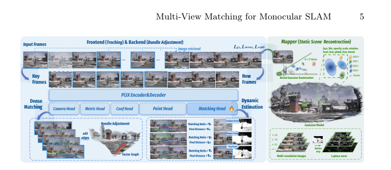
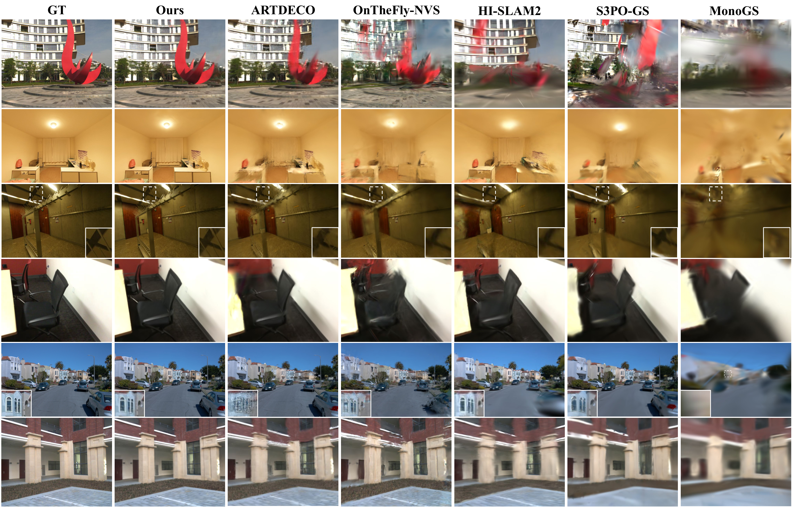
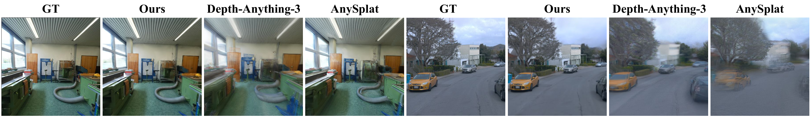
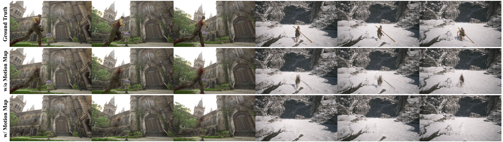

M^3
简单摘要
这篇工作要解决的问题是：未经校准的单目视频的流式重建仍然具有挑战性，因为它需要高精度的姿态估计和动态环境中计算高效的在线细化。
对应的核心做法是：虽然将 3D 基础模型与 SLAM 框架耦合是一种很有前景的范例，但一个关键瓶颈仍然存在。
从机制上看，关键设计在于：大多数多视图基础模型以前馈方式估计姿势，产生缺乏严格几何优化所需精度的像素级对应。
训练或推理层面的重点是：为了解决这个问题，我们提出了 M ，它通过专用的匹配头增强了多视图基础模型，以促进细粒度的密集对应，并将其集成到强大的单目高斯泼溅 SLAM 中。
实验层面的主要信号是：M 通过结合动态区域抑制和交叉推理内在对齐来进一步增强跟踪稳定性。


简而言之，这篇论文关注的核心是：这篇工作要解决的问题是：未经校准的单目视频的流式重建仍然具有挑战性，因为它需要高精度的姿态估计和动态环境中计算高效的在线细化。 对应的核心做法是：虽然将 3D 基础模型与 SLAM 框架耦合是一种很有前景的范例，但一个关键瓶颈仍然存在。 从机制上看，关键设计在于：大多数多视图基础模型以前馈方式估计…
这篇工作要解决的问题是：3D 场景重建已成为计算机视觉的一项基本功能，可实现从机器人感知到大规模场景数字化的各种应用。
对应的核心做法是：最近，该领域因两种范式而发生了革命性的变化。
从机制上看，关键设计在于：每个场景的优化，例如 3D 高斯泼溅 (3DGS)，它提供高保真渲染，以及前馈几何基础模型，它在单次传递中推断出密集的先验。
训练或推理层面的重点是：然而，大多数现有的基础模型本质上都是面向批处理的，旨在联合处理一组固定的图像。
实验层面的主要信号是：这种离线性质阻碍了实时反馈并限制了开放环境中的可扩展性，强调了对流式重建的迫切需要，其中相机轨迹和场景几何形状随着新观察的到来而逐渐更新。
核心创新
综合引言与方法部分，这篇论文的核心创新可以概括为以下几方面：
1）问题定义与研究动机
这篇工作要解决的问题是：3D 场景重建已成为计算机视觉的一项基本功能，可实现从机器人感知到大规模场景数字化的各种应用。
对应的核心做法是：最近，该领域因两种范式而发生了革命性的变化。
从机制上看，关键设计在于：每个场景的优化，例如 3D 高斯泼溅 (3DGS)，它提供高保真渲染，以及前馈几何基础模型，它在单次传递中推断出密集的先验。
训练或推理层面的重点是：然而，大多数现有的基础模型本质上都是面向批处理的，旨在联合处理一组固定的图像。
实验层面的主要信号是：这种离线性质阻碍了实时反馈并限制了开放环境中的可扩展性，强调了对流式重建的迫切需要，其中相机轨迹和场景几何形状随着新观察的到来而逐渐更新。
2）方法框架与核心模块
这篇工作要解决的问题是：说明了 M 的整体流程，M 是一种高效的流媒体框架，用于从未校准的单目视频进行场景重建。
对应的核心做法是：具体来说，我们的方法联合估计相机内在参数和相机姿态，同时重建一组代表底层静态 3D 场景的神经高斯函数。
从机制上看，关键设计在于：最近的工作试图通过将基础模型集成到 SLAM 管道中来提高 SLAM 效率、准确性和鲁棒性。
训练或推理层面的重点是：然而，这些方法要么由于重复的成对模型推理而遭受计算冗余，要么由于未明确建立像素级对应关系而缺乏足够的几何精度。
实验层面的主要信号是：为了解决这些限制，我们提出了 M ，它结合了 Pi3X 的变体，并通过密集像素级匹配进行了增强，如第 2 节中详述。
3）实验设计与工程价值
这篇工作要解决的问题是：我们根据涵盖室内和室外环境的多种公共基准来评估我们的方法。
对应的核心做法是：室内评估包括38个场景，其中20个来自ScanNet++，10个来自ScanNetV2，8个来自VR-NeRF。
从机制上看，关键设计在于：对于室外环境，我们使用 22 个大规模序列，其中 8 个来自 KITTI，9 个来自 Waymo，5 个来自 FAST-LIVO2。
训练或推理层面的重点是：我们评估姿态估计的准确性、渲染质量和效率。
实验层面的主要信号是：位姿精度使用绝对轨迹误差 (ATE) RMSE 进行测量。
技术细节
下面按照论文的方法章节结构展开，重点说明模型的关键模块、公式设计和训练策略。
这篇工作要解决的问题是：说明了 M 的整体流程，M 是一种高效的流媒体框架，用于从未校准的单目视频进行场景重建。
对应的核心做法是：具体来说，我们的方法联合估计相机内在参数和相机姿态，同时重建一组代表底层静态 3D 场景的神经高斯函数。
从机制上看，关键设计在于：最近的工作试图通过将基础模型集成到 SLAM 管道中来提高 SLAM 效率、准确性和鲁棒性。
训练或推理层面的重点是：然而，这些方法要么由于重复的成对模型推理而遭受计算冗余，要么由于未明确建立像素级对应关系而缺乏足够的几何精度。
实验层面的主要信号是：为了解决这些限制，我们提出了 M ，它结合了 Pi3X 的变体，并通过密集像素级匹配进行了增强，如第 2 节中详述。
$$ (\mathbf{D}, \mathbf{Q}) = \mathrm{MLP_{desc}}(\mathrm{DPT_{desc}}(\mathbf{H})), $$
这条公式用于定义模型中的核心计算关系：左侧给出目标量，右侧由输入与参数共同决定。阅读时可先关注 D、Q、H 的物理/几何含义，再看它们如何影响训练目标或渲染结果。
$$ \mathcal{L} \;=\; -\frac{1}{N-1}\sum_{k=2}^{N}\Big( \mathbf{Q}_k\,\mathcal{L}^{k}_{\text{match}}-\alpha \log \mathbf{Q}_k \Big), $$
这条公式用于定义模型中的核心计算关系：左侧给出目标量，右侧由输入与参数共同决定。阅读时可先关注 L、N、k、Q 的物理/几何含义，再看它们如何影响训练目标或渲染结果。
$$ \mathcal{L}^{k}_{\text{match}} \;=\; -\sum_{(u,v)\in \hat{\mathcal{M}}_k} \left( \log \frac{s_{\tau}(u,v)}{\sum_{w \in \mathcal{P}_{1}} s_{\tau}(w,v)} \;+\; \log \frac{s_{\tau}(u,v)}{\sum_{w \in \mathcal{P}_{k}} s_{\tau}(u,w)} \right), $$
这条公式用于定义模型中的核心计算关系：左侧给出目标量，右侧由输入与参数共同决定。阅读时可先关注 L、k、u、v 的物理/几何含义，再看它们如何影响训练目标或渲染结果。
$$ \mathbf{p}^* = \argmax_{\|\mathbf{p} - \phi(\mathbf{X}_i^j(\mathbf{q}))\| \le r} \langle \mathbf{D}_i(\mathbf{q}), \mathbf{D}_j(\mathbf{p}) \rangle, $$
这条公式用于定义模型中的核心计算关系：左侧给出目标量，右侧由输入与参数共同决定。阅读时可先关注 p、X、j、q 的物理/几何含义，再看它们如何影响训练目标或渲染结果。
$$ \mathbf{M}_i = \langle \mathbf{D}_k^i, \mathbf{D}^i_i \rangle \odot \mathbf{M}_k^i, $$
这条公式用于定义模型中的核心计算关系：左侧给出目标量，右侧由输入与参数共同决定。阅读时可先关注 M、D、i、i_i 的物理/几何含义，再看它们如何影响训练目标或渲染结果。
$$ E_{t} = \sum_{(m,n) \in \mathcal{M}(I_f, I_k)} \mathbf{M}_k \left\| \frac{\mathbf{p}_{k,n} - \phi \left( \mathbf{T}_{kf}\mathbf{X}^f_{f,m} \right)} {w(q_{m,n})} \right\|_\rho , $$
这条公式用于定义模型中的核心计算关系：左侧给出目标量，右侧由输入与参数共同决定。阅读时可先关注 t、m、n、M 的物理/几何含义，再看它们如何影响训练目标或渲染结果。



把全文方法串起来看，这篇论文的逻辑基本都遵循同一条主线：先把输入组织成更容易处理的表示，再通过模型结构和损失函数把这个表示推向目标输出，最后用可视化与数值实验共同证明该设计有效。
实验结论
实验部分主要回答两个问题：第一，方法是否真的优于已有基线；第二，这种优势来自哪一个设计决策。
这篇工作要解决的问题是：我们根据涵盖室内和室外环境的多种公共基准来评估我们的方法。
对应的核心做法是：室内评估包括38个场景，其中20个来自ScanNet++，10个来自ScanNetV2，8个来自VR-NeRF。
从机制上看，关键设计在于：对于室外环境，我们使用 22 个大规模序列，其中 8 个来自 KITTI，9 个来自 Waymo，5 个来自 FAST-LIVO2。
训练或推理层面的重点是：我们评估姿态估计的准确性、渲染质量和效率。
实验层面的主要信号是：位姿精度使用绝对轨迹误差 (ATE) RMSE 进行测量。
- 方法在核心指标上的优势与结构设计和训练目标直接相关；
- 消融实验表明，拿掉关键模块后性能与结果质量都有明显回落；
- 论文不仅比较数值，也关注可视化质量、稳定性和泛化能力等更贴近真实使用的信号。
理解评价
这篇工作要解决的问题是：尽管 M 将基础模型先验紧密集成到 SLAM 框架中，但该框架仍然依赖于前馈预测的正确性。
对应的核心做法是：当基础模型产生严重不准确的对应关系或几何先验时，SLAM 优化可能无法恢复，因为当前框架缺乏专用的回退机制。
从机制上看，关键设计在于：此外，该框架目前纯粹在单目视觉环境中运行，并且不利用激光雷达或惯性测量等补充传感方式。
训练或推理层面的重点是：多传感器融合可以进一步提高挑战性场景中的鲁棒性和准确性。
实验层面的主要信号是：我们提出了 M ，一种针对未校准单目视频的高效且强大的流式重建框架。
如果把它当成研究参考，建议重点关注三件事：第一，这套方法真正依赖的归纳偏置是什么；第二，实验中真正拉开差距的模块是哪一个；第三，它的局限究竟来自数据、算力还是监督信号本身。
以下相关论文可以作为进一步追踪的入口：